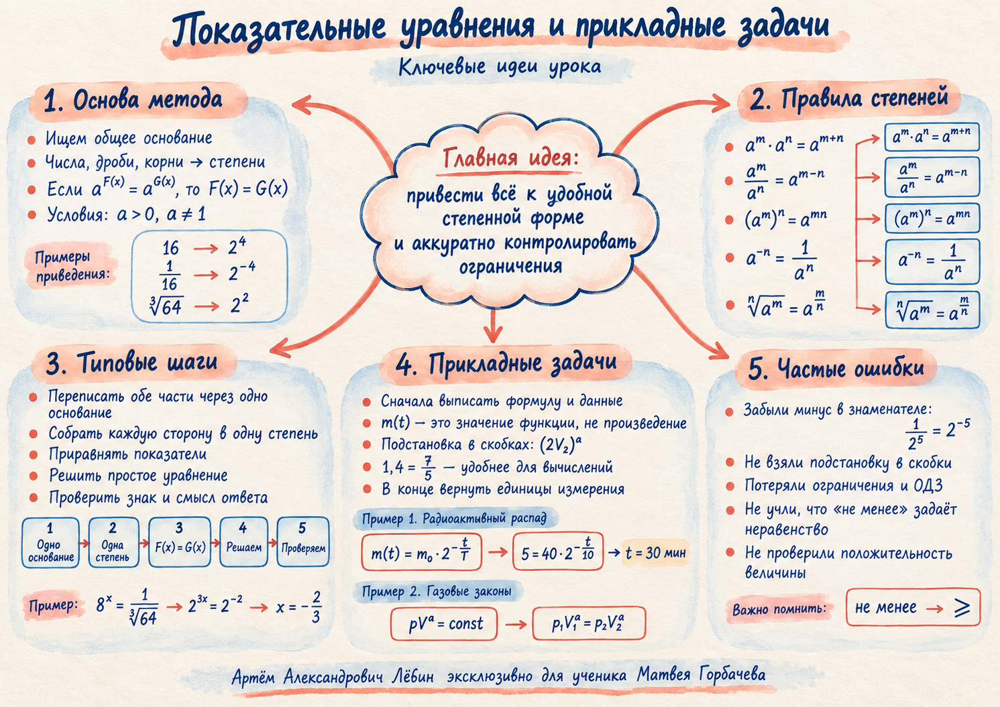

Опорные свойства
Степени: что должно срабатывать автоматически
Произведение
Частное
Степень степени
Отрицательный показатель
Рабочий принцип: составные числа, дроби и корни по возможности переписывайте как степени одного удобного основания.
Главный маршрут занятия: привести выражения к удобной степенной форме, решить полученное уравнение и отдельно проконтролировать знак, ограничения и смысл ответа.
Используйте плакат для быстрого повторения алгоритма, формул и типичных ошибок.

После перехода к основанию 3: 3¹·(3²)x−1 = 3⁻³, поэтому 2x − 1 = −3 и x = −1.
Цель — получить первую степень неизвестной, сохранив равносильность на области допустимых значений.
Правая часть положительна, поэтому искомое x положительно. Возводим обе части в степень 5/3 и получаем x = ∛2.
Если V > 0 и V2/3 = 16, то допускается выбрать положительную ветвь и получить V = 163/2 = 64.
Что дано: p = 3,2·10⁶ Па. Найти: положительный объём V.
Идея: 3,2·10⁶ = 32·10⁵, поэтому после сокращения V5/3 = 1/32 = 2⁻⁵.
Ответ: V = 0,125 м³.
Дано: m₀ = 40 мг, T = 10 мин, m(t) = 5 мг.
Ответ: 30 мин.
Для двух состояний: p₁V₁a = p₂V₂a. Если объём уменьшили в 2 раза, а давление должно увеличиться не менее чем в 4 раза, то 2a ≥ 4 и amin = 2.
Во втором разобранном случае p₁ = 1 атм, V₁ = 1,6 л, p₂ = 128 атм, a = 1,4 = 7/5. Получаем V₂ = 0,05 л.
pV3/2 = 64. Найдите V, если p = 8 в согласованных единицах.
m(t) = m₀·2−t/T, m₀ = 96 мг, T = 12 мин. Через сколько минут масса станет равной 12 мг?
pVa = const, a > 0. Объём уменьшили в 16 раз. Найдите наименьшее a, при котором давление увеличится не менее чем в 8 раз.
| № | Ответ |
|---|---|
| 1 | x = 5 |
| 2 | x = −1/6 |
| 3 | V = 4 |
| 4 | 36 мин |
| 5 | amin = 3/4 |
Отмечено 0 из 5.